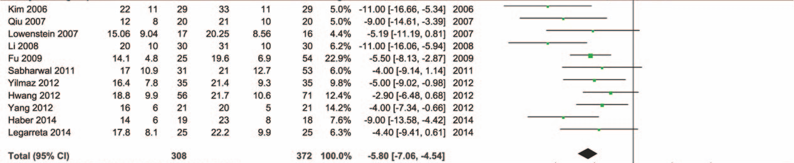

<?xml version="1.0" encoding="UTF-8"?>
<table xmlns="http://www.w3.org/1999/xhtml">
 <thead>
  <tr>
   <th>lines.svg</th>
   <th>../raw.body.png</th>
  </tr>
 </thead>
 <tbody>
  <tr>
   <td>
    <svg height="271.0" width="507.0" xmlns="http://www.w3.org/2000/svg">
     <g transform="matrix(1.0,0.0,0.0,1.0,0.0,0.0)">
      <g class="horizontallines">
       <line x1="0.0" y1="0.0" x2="497.0" y2="0.0" style="stroke:red;stroke-width:1.0;"/>
       <line x1="35.0" y1="9.0" x2="175.0" y2="9.0" style="stroke:red;stroke-width:1.0;"/>
       <line x1="61.0" y1="28.0" x2="200.0" y2="28.0" style="stroke:red;stroke-width:2.0;"/>
       <line x1="104.0" y1="48.0" x2="252.0" y2="48.0" style="stroke:red;stroke-width:2.0;"/>
       <line x1="43.0" y1="68.0" x2="168.0" y2="68.0" style="stroke:red;stroke-width:2.0;"/>
       <line x1="129.0" y1="107.0" x2="256.0" y2="107.0" style="stroke:red;stroke-width:2.0;"/>
       <line x1="130.0" y1="127.0" x2="230.0" y2="127.0" style="stroke:red;stroke-width:2.0;"/>
       <line x1="74.0" y1="187.0" x2="187.0" y2="187.0" style="stroke:red;stroke-width:2.0;"/>
       <line x1="125.0" y1="207.0" x2="249.0" y2="207.0" style="stroke:red;stroke-width:1.0;"/>
      </g>
      <g class="verticallines">
       <line x1="242.0" y1="0.0" x2="242.0" y2="261.0" style="stroke:blue;stroke-width:1.0;"/>
      </g>
     </g>
    </svg>
   </td>
  </tr>
  <tr>
   <td>
    
   </td>
  </tr>
 </tbody>
</table>
